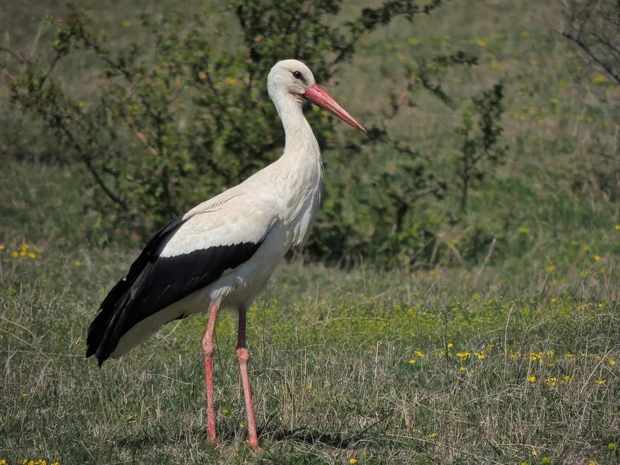

鸟类 · 动物界
白鹳 Ciconia ciconia

欧洲人熟知的大型涉禽，全身白羽配黑色飞羽、红色的长喙和长腿，因民间“送子鸟”的传说而广为人知。
- 分类
- 门脊索动物门纲鸟纲目鹳形目科鹳科属鹳属
- 栖息环境
- 沼泽、湿地、河滩、农田与村庄屋顶，喜在开阔浅水区觅食
- 地理分布
- 繁殖于欧洲、中亚和北非，越冬于非洲与南亚，中国新疆有繁殖种群
- 保护级别
- IUCN 无危（LC）；中国国家一级保护动物
物种志
白鹳体长 100–115 cm，翼展 155–165 cm，体重 2.3–4.4 kg。它全身羽毛洁白，只有飞羽为黑色，喙和腿呈鲜红色，飞行时黑白分明，红色长喙向前伸出，姿态十分优雅，它是欧洲常见的大型涉禽之一。
白鹳繁殖于欧洲、中亚和北非，冬季南迁到非洲和南亚，中国新疆有繁殖种群。它们栖息在沼泽、湿地和农田，以鱼、蛙、昆虫和小型哺乳动物为食，常在草地和浅水中缓慢行走觅食。白鹳喜欢在屋顶、烟囱和电线杆上筑巢，每窝产卵 3–5 枚，孵化 33–34 天。欧洲民间把白鹳称为“送子鸟”，目前被列为无危物种，中国将其列为国家一级保护动物。
形态与习性
- 食性鱼、蛙、昆虫和小型哺乳动物
- 体长100–115 cm
- 翼展155–165 cm
- 体重2.3–4.4 kg
- 繁殖每窝 3–5 枚卵，孵化 33–34 天
- 寿命野外约 20 年
趣味知识
- 欧洲民间传说白鹳会把婴儿送到家门口，因此它被称为“送子鸟”。
- 白鹳的喙和腿呈鲜红色，飞羽黑色，飞行时黑白红三色分明。
- 白鹳喜欢在人类建筑的屋顶和烟囱上筑巢，与人类关系密切。